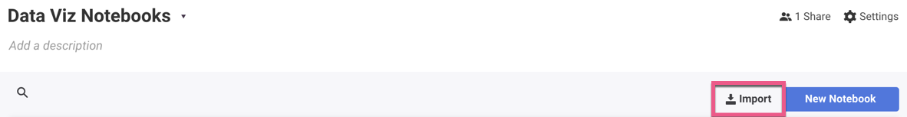

Objectives For Lesson 22.1
- Introduction to Big Data
Before we begin
First day when you entered this course, everything seems fine. Life was easy.
Then, the technical challenges come, and you wonder why you're learning what you're learning. "Why should I be learning this if I'm not going to use it as a Data Analyst?"
Finally, Machine Learning comes, and it broke the camel's back. You would think that data analysis is much simpler than scraping websites, but you're realizing that they have the same amount of complexity, if it's not worse.
So let's deal with some misnomers.
Do you need to know how to create a light bulb to use it?
Definitely not. A three-year-old could turn on a light bulb like any adult would.
Of course, if the light bulb doesn't light up, a three-year-old doesn't know how to fix it, but an electrical engineer would.
That's why many of the lessons in Machine Learning and Big Data are concept-based. We explain the concept, and as you try out while remembering the concepts, you understand why certain behaviors happen within the system.
That doesn't mean you necessarily understand the math behind the system. You're not a car mechanic, but a driver. Of course, understanding the math helps. But seriously, you're not there to write out the math, but to understand how to use it when it counts.
Eventually, if you decide to work towards being a car mechanic, there will be a million more things to learn. However, you're a driver, and a driver to bridge business and data analysis together. That's what you need to focus on.
Introduction to Big Data
You've learned some ML and Data Science techniques. Now, your boss is asking to put your models into production. How are you doing to do it? That's where you will need an infrastructure.
We coin the word "Big Data" because for the first time in 2005 because we finally built a system or infrastructure that is capable of handling massive amounts of data without sampling. Big Data refers to data in a macro-scale, while the term "small data" is contextual data which is specific to a purpose or a use-case.
For more than 10 years, Big Data has been the buzzword. Now, folks are realizing that Big Data must translate to Small Data to be relevant to our use-case.
The advent of Hadoop, created by Yahoo and built on top of Google's MapReduce in 2005, became the standard open source infrastructure to process Big Data. Google's goal was to index every single website in the World Wide Web, and they needed something robust to be able to handle it. Thus, Hadoop was born.
But Google isn't the only place which has massive amounts of data. Medical resarch, media and entertainment, and many industries adopted Hadoop as part of that infrastructure to process and make sense of the data they possessed.
What is expected of you?
About five years ago, if you're going to do data science, you probably need to build your own infrastructure to make it happen. Nowadays, AWS and Google brought the barrier of entry low, and anyone who has a credit card can run a big data instrastructure without breaking their bank.
MapReduce
Google created this technique of resilent and scalable technique to do computation on a large scale. In essence:
- The
map()function breaks down a large dataset into small chunks, usually according to the number of nodes within your system, and converting them into key-value pairs. - The shuffling layer is hidden from you. It groups the key-pairs together.
- Lastly, the
reduce()function processes each group of output data with the algorithm which you specify.
There is a quirk to this process. In general, the bigger the data, the better it performs, but the smaller the data, the poorer it performs too.
Hadoop Distributed File System (HDFS)
In general, it layers another file system across the network, and data which is stored in one node will be replicated to another nodes. (High availability, High resilence).
- In a nutshell, let's say you import a file from your local machine into the HDFS, and all the computers in the classroom are connected together in a Hadoop system, everything will sync together like Dropbox.
- If a file is deleted by mistake and it's not an official command, or if a computer breaks down, the rest of the nodes will "recover" the system by itself since the same data exist through all the computers. Hence, it's highly resilent.
- High availability since every computer will have the same file.
A HDFS cluster has two types of nodes (servers)
- Name Node
- The "brains" of your cluster that manages the file system and the metadata.
- Only one per cluster. The backup is only there in case the NameNode fails.
- Data Node
- Stores the data.
- As many nodes as you want.
- Reports to the Name Node the list of data blocks it stores.
YARN (Yet Another Resource Negotiator)
If you're interested in doing Big Data infrastructure, lookup on Apache Zookeeper too.
Basically, YARN manages scheduling and resource management across the nodes.
Skipping 01-Ins_MapReduce
It is optional, and it only tells you how does MapReduce work. There isn't code involved.
02-Evr_Word_Count
Please install MRJob with this command: pip install MRJob
We are doing a Python file, not a Jupyter notebook.
from mrjob.job import MRJob
class Bacon_count(MRJob):
def mapper(self, _, line):
for word in line.split():
if word.lower() == "bacon":
yield "bacon", 1
def reducer(self, key, values):
yield key, sum(values)
if __name__ == "__main__":
Bacon_count.run()
Very simple code:
- Run using
python bacon_counter.py input.txtwithin the folder. You'll notice you don't need to read the file manually withopen()function. mapper()takes in two values: (key, value)selfis a reference from a Python Class. It's not an input parameter.- If you don't define a key, it will be
None. You will have to specify a key in your output. yieldworks similarly toreturn, but usuallyreturnexits the function when it is invoked, whileyieldwill continue to run in aforloop.yieldreturns a sequence of values, whilereturnreturns specified values.reducer()receives the key (bacon) and the values (1) from the mapper. By usingyieldand summing it up, you can count the sum of the key.
03-Evr_MrJob_CSV
"""
Find the number of hot days in Austin for 2017
"""
from mrjob.job import MRJob
class Hot_Days(MRJob):
def mapper(self, key, line):
(station, name, state, date, snow, tmax, tmin) = line.split(",")
if tmax and int(tmax) >= 100:
yield name, 1
def reducer(self, name, hot):
yield name, sum(hot)
if __name__ == "__main__":
Hot_Days.run()
This is to demonstrate you can do more than just counting strings. By splitting each string into it's proper variables, you can do comparisons or other math on it.
Remember, the mapper grabs row by row.
04-Stu_Austin_Snow: Your Turn
You're given a list of locations and the dates it has snowed. The instruction doesn't give you much details on the header of the CSV file, but this is the header:
(station, name, state, date, snow, tmax, tmin)
It's kind of hard to find values in your preliminary analysis since a lot of the data is showing zeros. I only found one location with snow in line 5267, but there are certainly more than one.
What is Spark?
MrJob relies on the local machine or Hadoop to run MapReduce, but Spark if much faster since it does in-memory calculations and can be used with or without Hadoop.
- Spark can be invoked by Python with PySpark, or Scala.
- PySpark is similar to Pandas, but Pandas cannot handle petrabytes of data. Spark can.
- Again, with Hadoop, it breaks the dataframe into sections, and combines the results together for output like MapReduce.
Importing Jupyter Notebooks to ZEPL
ZEPL is a cloud-based service which runs notebooks that run PySpark.
Sign up for ZEPL (https://www.zepl.com/register).
The school gave a bunch of links for us to Slack out to you about ZEPL. You can follow the guide given, but I'm going to post it here too:
- How to create a new workspace (folder): https://youtu.be/G5xNP-XRvjc
- How to create a Spark resource in ZEPL: https://youtu.be/TpSAPOQDTTc
- How to set the default spark interpreter: https://youtu.be/RXzlQM9A2jU
- How to import .ipynb notebooks: https://youtu.be/Y5ih16yhQvY
- How to resolve an ABORT error: https://youtu.be/pGq6b9hJ34s
- How to fix a NameError: https://youtu.be/pvw6E5jMMZU
Not all the items in the guide pertain to today's lesson.
After you've signed up, we need to setup your environment in ZEPL.
- Log in to ZEPL and create a new space that will be used to store all notebooks. Name it whatever you want.
- We need to setup the "Interpreter":
- Click "Resources" on the top right.

- From the new screen select "Interpreter settings" on the left hand side.
- Click "..." next to the spark and select "settings".
- From the menu change drop down from python3 to python.
- Click "Apply"
- If spark is not the default interpreter click "..." again and select "Set as default interpreter".

- Click the newly created space. Add a new notebook by selecting Import on the right corner and upload spark_dataframe_basics.json. You can download it here: spark_dataframe_basics.json
- 
- Try running it. If you encounter weird issues, shut down the notebook and re-run it again. Spark Jobs in the cloud can be unstable sometimes.
At this point, please ensure you've done the above steps. Otherwise, it's impossible to follow the class.
05-Ins_Pyspark_DataFrames_Basics
Load the spark_dataframe_basics.json into ZEPL. The first thing you'll notice is how similar it is to Pandas.
Ref: http://spark.apache.org/docs/latest/api/python/index.html
- When you use pyspark, your data is loaded into HDFS (if it's in a Hadoop cluster, and ZEPL uses Hadoop), and then loaded into memory to distribute to other nodes. However, pandas is run on your local machine.
- Each cell starts with a
%pyspark. This is important for the notebook to know you're running PySpark. - Every Spark job starts with
sparkContext. Without it, you can't run anything. - Our example is a CSV file, so the data structure is fixed. However, if you're loading JSON data (if you're streaming from an API source), you'll need to use
StructFieldand construct a proper schema before you can load it into a DataFrame. - That's because dataframes are 2D tables, but JSON data allows many layers within the data itself.
06-Stu_Pyspark_DataFrames_Basics: Your Turn
You'll have to load the demographic.json file into ZEPL to get started.
07-Ins_Pyspark_DataFrames_Filtering
We're doing basic filtering, and it's simple.
08-Stu_Pyspark_DataFrames_Filtering: Your turn
You'll have to load the demographics_filtered.json file into ZEPL to get started.
09-Ins_Pyspark_DataFrames_Dates
We are dealing with dates, and plotting the data with matplotlib.
You can't plot with PySpark. You'll have to export it into Pandas, and then plot from there. That's because Spark is not a visualization tool.
10-Stu_Pyspark_DataFrames_Dates: Your turn
You'll have to load the bigfoot.json file into ZEPL to get started.